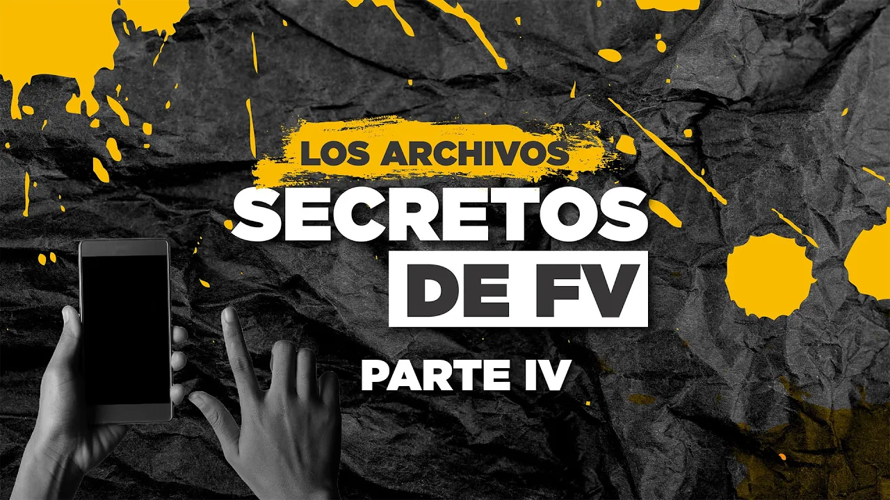
Part 4 · Nov 12, 2024 · The threats and the buying of judges
Fernando Villavicencio, a presidential candidate, was assassinated on August 9, 2023, as he left a rally in Quito. His phone passed through the hands of a captain, a sergeant, an assistant, his daughter and a colleague who made a copy for the FBI. The copy came back to Ecuador, leaked and reached La Posta: 9,000 chats and 68 gigabytes. For a month the team verified it conversation by conversation. It published four shows about the living: the prosecutor, the political operator who paid every month, the colleague who took money, the judges, and the threats: the veiled one from Norero and the one from the Lasso government.

Tell the guys I'll take care of October on Thursday. I'm so ashamed I can't show my face.
Maestro, tell the guys December got done today. A thousand apologies, late but I delivered.
Santa Claus runs late too. Thanks.
Brother, January is done. It's been a magical month because I was able to do it early.

Fernando Villavicencio was a journalist, an investigator of public officials and chair of the National Assembly's Oversight Committee before running for president. He was shot dead on August 9, 2023, as he left a sports arena in northern Quito, eleven days before the election. Before going in, he handed his phone to Captain Cristian Cevallos, his head of security. According to La Posta's reconstruction with people close to the family, the captain gave it to a sergeant, the sergeant took it to the Clínica de la Mujer, César Gonzaga picked it up and handed it to Amanda Villavicencio, his daughter. She entrusted it to Christian Zurita, her father's colleague and friend.
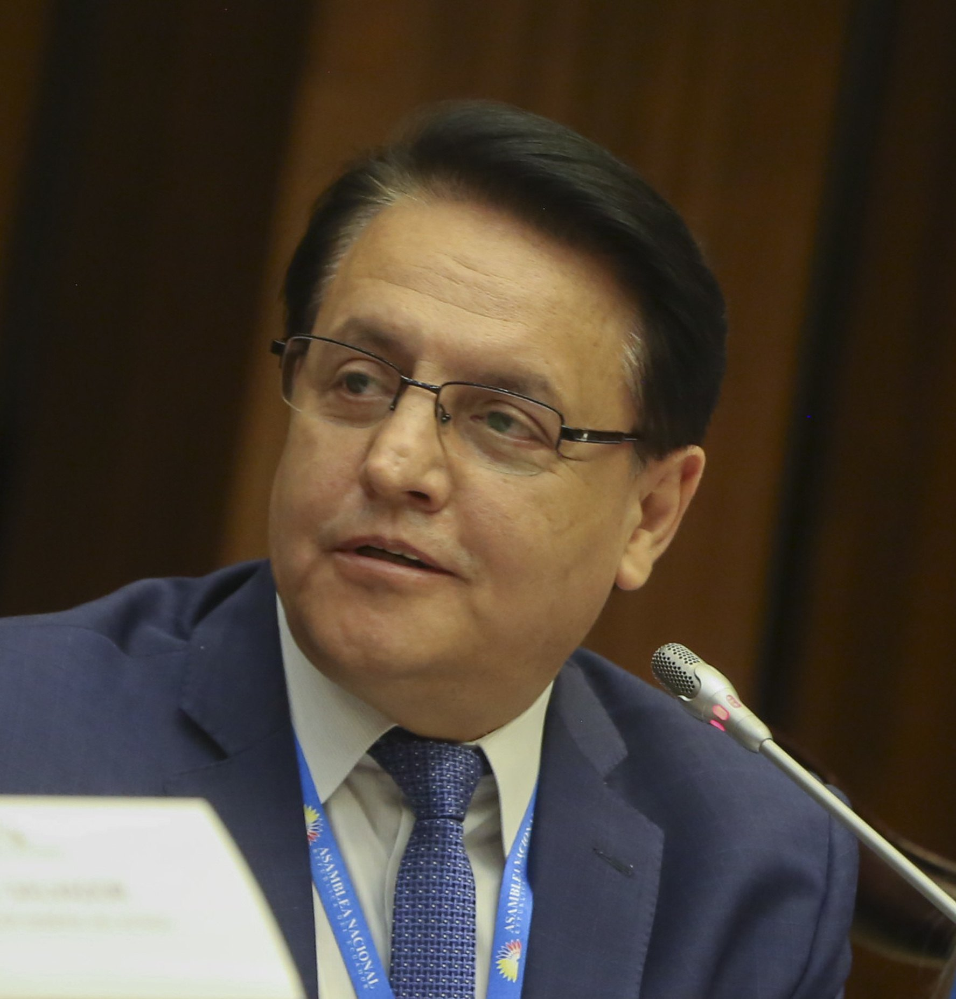
Zurita, accompanied by another person, called a hacker they used to work with, made a mirror image of the phone and traveled to New York to hand a copy to the FBI, which had entered the crime scene within hours, authorized by Lasso at the request of Ambassador Michael Fitzpatrick. He kept another copy. The FBI extracted the messages, recovered images and, in December 2023, sent Ecuador's Attorney General's Office a copy of Zurita's copy, where it was logged under a chain-of-custody number. The chain was broken. By November 6, 2024, the cloud link posted by Correísta candidate Priscila Schettini was already circulating; that day the Attorney General's Office issued a statement saying the information was false, and Zurita posted a video. The next morning, at 9:27, La Posta went on air with the results of a month of work on its own copy, handed over by a source in the Attorney General's Office: it was not Zurita's. Boscán said he had the originating numbers of the messages, and the photos and documents with their metadata.
He hands his phone to Captain Cristian Cevallos, his head of security, before entering the arena. August 9, 2023
Receives the phone from the captain and takes it to the Clínica de la Mujer
Assistant, head of security according to Amanda, and a National Assembly candidate. Picks up the phone and decides to give it to the family
Daughter. Hands her father's phone, computer and other devices to a colleague of his
Calls a hacker, makes a mirror image, travels to New York and hands a copy to the FBI. Keeps another
Extracts messages, recovers images and sends a copy to Ecuador's Attorney General's Office in December 2023
Keeps it under chain of custody. It leaks
Receives the copy from a source in the Attorney General's Office. A month of verification. November 7, 2024
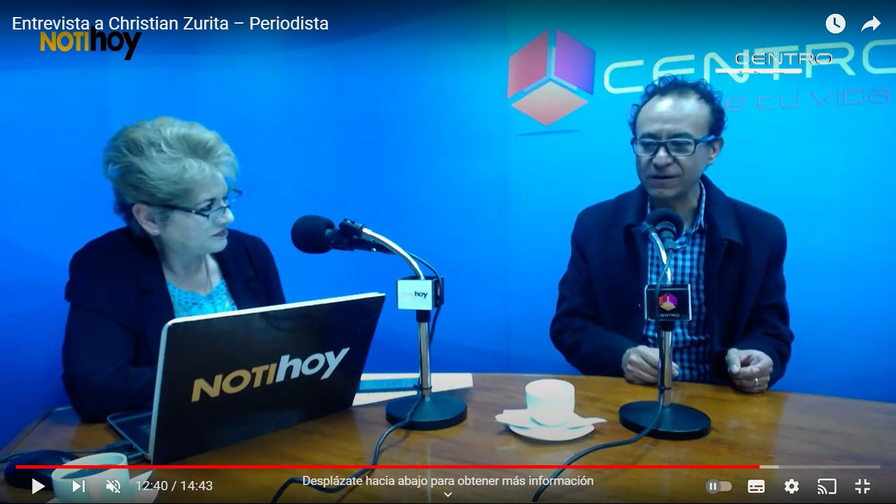
Before publishing there was a debate that the show made public: why go after a dead man, why violate his privacy, whether it was worth it. The answer was that conversations have two parties and the other one is alive. La Posta said it condemned the indiscriminate publication of the thousands of chats, that it had excluded anything that exposed sources or private life, and that it would limit itself to what touched public money, contracts, judges and officials. To verify, it checked the chats against the phone's contacts: some twenty on the first day, about thirty by the end. Antonio Ricaurte, Pancho Jiménez, Ricardo Vanegas, Carlos Rojas, Martín Pallares, Fausto López, Fermín Vaca and the outlet's own journalists confirmed that their conversations matched. The president of the CNE, Diana Atamaint, confirmed to La Posta the conversation of February 21, 2021, in which prosecutor Salazar asked her to avoid raids on the Council, and which Salazar had forwarded to Villavicencio. The Attorney General's Office, replying in writing, admitted that the phone was in FBI custody and that the copy it received was part of the preliminary investigation into the murder. Only two people denied their chats: Attorney General Diana Salazar and Carlos Pareja Cordero. Trolls fabricated a chat dated February 31 to suggest the files could be edited.
The first installment was about Carlos Pareja Cordero, known as Charlie or Capaco, a Guayaquil lawyer, cousin of Carlos Pareja Yannuzzelli, a former aide in León Febres Cordero's government, a political operator, and a personal friend of Guillermo Lasso and of Villavicencio. He had surfaced in the Odebrecht scandal as the intermediary in a payment and sued Diana Salazar in the United States when she headed the UAFE financial intelligence unit. According to La Posta, there was a pact that both deny: he dropped the accusation, she was able to become attorney general, and he was able to return from exile in Peru, where Boscán, Velásquez and Vivanco visited him. Four years of conversation. On November 2, 2021, when Villavicencio was already an assembly member, Pareja writes to him: tell the guys I'll take care of October on Thursday, I'm so ashamed I can't show my face. On December 23: today I did November. On the 28th: December got done today. Villavicencio replies: Santa Claus runs late too. On January 19, 2022: January is done, it's been a magical month because I was able to do it early. The reply: thanks to you that portal works. Villavicencio's only portal in 2022 was Periodismo de Investigación, which he shared with Zurita and which his daughter Amanda ran; Naím Massú's son-in-law made three deposits of 7,000 dollars to the portal, according to the chats.
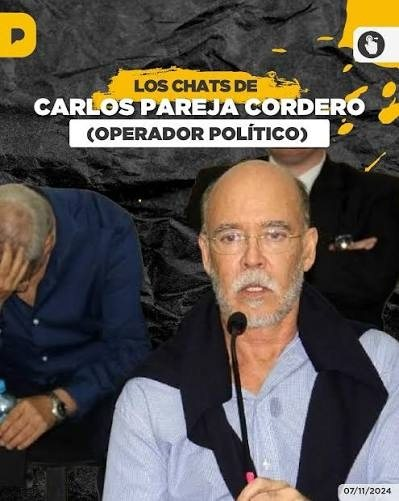
One message explains why this archive matters. On July 9, 2022, Pareja Cordero sends Villavicencio a key name in the electricity sector: Rubén Cherres, alias El Platinado, godson of Danilo Carrera and godfather of Minister Xavier Vera. Villavicencio replies: I had been given that name, I understand Guillermo knows. La Posta published El Gran Padrino, with Cherres and Carrera at its center, on January 9, 2023, six months later. The chats show that the information existed and whose hands it was in: on January 9, 2023, Marlon Puertas reproaches him that the La Posta crooks beat you to it, and Villavicencio answers that he gave it to Zurita two months earlier and they did not publish it.
Tell the guys I'll take care of October on Thursday. I'm so ashamed I can't show my face.
Maestro, tell the guys December got done today. A thousand apologies, late but I delivered.
Santa Claus runs late too. Thanks.
Brother, January is done. It's been a magical month because I was able to do it early.
Don't mention it, brother. Thanks to you that portal works. A thousand thanks.
Luque and Cherres are auctioning off CNEL and CELEC business units to the highest bidder. It's disgusting.
You're a sniper.
You people allowed a fraud to be set up in the referendum, you did no electoral oversight, and now you threaten me with the Naín matter. I think it's a joke.
Are you also going to address what was found in last week's raids?
The hearing is tomorrow, at 2:30.
I'll write to my friend. It's already been discussed with the judge.
Tomorrow I have trial at 2:30 with the same judge.
Everything is under control.
Everyone is keeping quiet. What cowards.
Do you know what's going to happen in Singue?
Two to one. Bittersweet.
You should chair the Oversight Committee.
We're working on it. A little call to Guillermo would help.
Not for publication. It's IP, just for you. If you publish it, it's a crime.
The prosecutor. The chats with Diana Salazar that La Posta showed run from 2020 to 2021. On January 25, 2021, before the verdict in the Singue case was read, he asks her what is going to happen; nineteen minutes later she replies: two to one, bittersweet. On May 16, 2021, she tells him he should chair the Oversight Committee; he says: we're working on it, a little call to Guillermo would help. On June 21, 2021, about the case Cuesta opened against his family: it's in the hands of our prosecutor friend. On December 6, 2021, she passes him a recording from a confidential preliminary inquiry into a relative of Judiciary Council member Maribel Barreno: not for publication, it's IP, just for you, if you publish it, it's a crime. On September 12, 2020, about a prosecutor who had been reported: I'll send him off to a remote canton. On Coca Codo, in June 2021: it is imperative to coordinate timing so we don't collide. The Attorney General's Office replied in five points: the attorney general did not disseminate restricted information, did not threaten anyone, summonses are the National Assembly's responsibility, and she cannot open an investigation against herself.
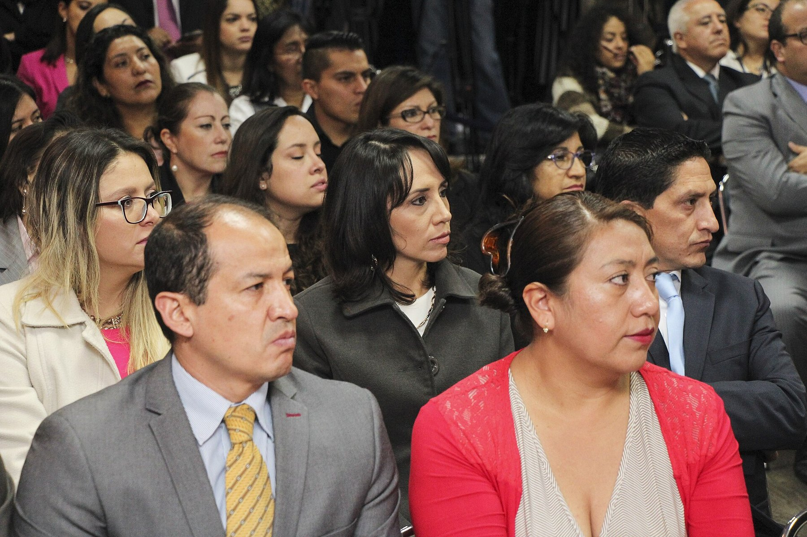
The payments came with instructions. In the Saab case, Pareja insists on going after Simón Parra, of Banco Amazonas, and Jorge Zavala, and on leaving out León Roldós and former Vice President Alberto Dahik. He dictates whom to summon to the committee, which report to request from the Central Bank, whom not to receive and what questions to ask; about assembly member Marcos Troya: that's cash, that's how it has to be. His obsession is the Petrochina case and his number one enemy, Enrique Cadena. On May 28, 2022, he sends him the photo of the swimming pool, Aleaga with Cortázar and Jordán, and the investigation into Xavier Jordán's house linked to Leandro Norero, which Villavicencio publishes as his own: the origin of the complaint that cost Ronny Aleaga his career. On July 10, 2022, he writes that Luque and Cherres are auctioning off CNEL and CELEC business units to the highest bidder: seven months before La Posta published El Gran Padrino, Lasso's inner circle already knew. In November 2022 he asks him to keep talking to the lady, the attorney general, so she understands he is an ally. In August 2022 Villavicencio gets a job at CNT for someone recommended to him, tomorrow he'll be sitting in the Manabí regional office, and in January 2023 he asks for a name to stop a dismissal there. La Posta argued that a journalist who takes money from an operator is unethical, but that a legislator who does so may be committing a crime. Pareja Cordero denied the chats were genuine: he made no payment, he was not threatened by Salazar, he did not arrange any jobs.
The second installment, on November 8, was about money. Payments from María Verónica Jairala, whom Villavicencio described in his chats as the Isaías family's delegate in Ecuador, the first direct evidence of a relationship he always denied: cash documents picked up by César Gonzaga or his daughter at her guardhouse, and transfers to third parties' accounts, never to his own. Gladys Janeth Santos confirmed to La Posta that the deposits were made into her account and that she returned the money, and a former IESS official said Villavicencio got him debt-collection contracts. In June 2021 Jairala asked him to talk to Salazar to push actions against JJ Franco over Odebrecht; three months later Franco was raided. Contracts with the El Juri group, the Kia dealer, in the name of his sister Alexandra Villavicencio, for services she did not provide; he was the one renewing them as a public official, two years after he had denounced that same group. Alexandra kept a spreadsheet with the accounts. In his asset declaration, Villavicencio listed his salary as his only income. Chats with Aparicio Caicedo, Lasso's legal secretary: he asks him for candidate profiles for telecommunications posts, three with business ties to his sister, asks how Troya will vote and, above all, Caicedo intercedes with the SRI tax agency on the money laundering case Santiago Cuesta filed against the Villavicencio family: I already gave them a talking-to. Chats with Ana Belén Cordero, vice chair of the Oversight Committee: he passes her a quote to have businessmen fund his show, that's what we have to do to neutralize Boscán, Villavicencio writes; she denied it. And Lasso. On January 26, 2023, after the raids in the Encuentro case, including Naím Massú's house, Lasso asks him whether he will also address those findings; he replies that they are under chain of custody. On February 7, the last conversation: you're a sniper. The reply: you people allowed a fraud in the referendum and now you threaten me with the Naín matter; it will be the best opportunity to explain your relationship with Jordán and with customs.
Telling the truth leaves you alone, but it also sets you free. It is the price you have to pay for not being a slave to lies.
Roberto Saviano, quoted at the opening of the first installment
The third installment, on November 11, broadcast from the Los Ingobernables studio because of the blackouts, was called troll centers and pay-for-play journalism: how publications were coordinated between politics and certain journalists. Marlon Puertas, of La Historia, asks him to use his influence to get public advertising from Banco del Pacífico, an urgent sponsorship because he is flat broke, a bit of cash in advance; there is a direct transfer from Villavicencio to his account on October 4, 2022. On September 7, 2022, Puertas writes: the commitment is to finish off La Posta, and Villavicencio replies: signed. Álvaro Rosero, of Radio Exa, asks him in February 2021 for a contact with the campaign's finance manager. A Venezuelan woman ran a troll center that charged 5,000 dollars, delivered by Captain Cevallos; for the 2023 campaign, Sharon Jiménez proposes splitting contributions into amounts under 400 dollars. La Data quoted him a proposal at 8,000 dollars plus VAT; its owner runs the outlet from prison, convicted of femicide. José Najas fabricated a fake video against assembly member Viviana Veloz and a 60-page report on nonexistent accounts belonging to Boscán, produced by a former Mossack Fonseca director. And Amanda Villavicencio, director of her father's portal, collected the deposits from Naím Massú's son-in-law; Boscán challenged her to open her accounts from 2020 in exchange for opening his own.
The fourth, on November 12, was about judges and threats. On November 6, 2022, his brother Eduardo, who owns a pizzeria, alerts him to a hearing the next day stemming from Cuesta's money laundering complaint; Villavicencio: I'll write to my friend, it's already been discussed with the judge. On the 23rd: tomorrow I have trial with the same judge; everything is under control. Chats with Claudia Garzón, the Colombian woman Lasso appointed to pacify the prisons and who was later prosecuted as part of Norero's network: she kept insisting on putting him in touch with Leandro Norero. He paid no attention until after Norero's death, when she forwarded him the kingpin's messages, I want him to hear me out, it's nothing like what they tell him, a veiled threat, and confirmed to him that Los Lobos operated with former commander Tannya Varela. Chats with Gabriela Panchana about the 2023 campaign: 20,000 a month, 500,000 for production, a transfer from a businessman; the CNE has no record of money from businessmen in his campaign. Panchana called it an outrage and said she donated her services with an invoice. Journalist Sara Ortiz, of Expreso, writes to him on December 22, 2022, that a story has gone out of her hands and that they don't want to run it until others run it first; Villavicencio: everyone is keeping quiet, what cowards. Boscán, who worked at Expreso, said that from the paper's owner, Galo Martínez, he only ever received support to publish heavy investigations, Caminosca included. Ortiz replied that she had no idea what they were talking about and that the ones who kept quiet about Norero were them. And the other threat: the Lasso government had him threatened with the Naím matter and with the SRI case file. The show closed with an interview with Jan Topic about his disqualification from the election. A Monitor Digital poll that day: 86 percent believed the chats were real.

The chats contained no evidence about the murder, but La Posta highlighted the conversations with Garzón: they pointed to Los Lobos and former commander Varela months before the crime. On April 2, 2026, Boscán said he had spoken with the only person who has served as a witness in the assassination, José Patricio Aguas Muñoz, identified as a Los Lobos ringleader, days before his capture in Sucumbíos on an earlier warrant the Attorney General's Office had never cleared. Aguas told him that Attorney General Salazar pressured him to talk, that he was in Panama guarded by Ecuadorian police officers with a promise of U.S. residency, and that the Attorney General's Office was asking to send him to the Latacunga prison, controlled by Los Lobos. With that single witness, according to Boscán, Salazar told Zurita and Sarauz: we know it was the Correístas.
The copy of the phone holds 8,913 exported conversations. We read the longest ones in full and set aside those about family and scheduling. What remains is a portrait of how Villavicencio worked: sources inside state companies, informants with access to police intelligence, and journalists who asked him for documents and from whom he asked for headlines. None of what follows has been verified by us. These are claims made by third parties to an assembly member, with a date and a counterpart, and that is how we present them.
Xavier Jordán's network, a year before Metástasis. An informant who signs as Kmaila has been writing to him since October 2020: César García, Correa's lawyer, is switching to defend Jordán "to stop a new money laundering investigation." On May 25, 2022, she tells him that the house raided for drug trafficking in Samborondón belonged to Jordán and that the white car in the operation is registered to companies of Leandro Norero, with the company Dymarla and the Jarrín brothers as intermediaries. Villavicencio replies: "I'll report it, no problem, but I need proof." In June the source passes him the house in Doral held under Doral Asset 1 LLC and the company Katalist, the name of Juan Pablo Jaramillo Dávila as the collector in the hospitals, and Jordán's birthday party in Miami on April 18 with Ronny Aleaga as a guest. In January 2023 she floats the hypothesis Villavicencio would later repeat in public: Jordán is cooperating with the United States and gave up Norero. On February 2, 2023, she tells him about the murder of a Colombian in Jordán's circle, Juan Carlos Gómez Vélez, "19 bullets," which Villavicencio confirms two days later.
You're now part of the investigation team.
Villavicencio to his informant, June 3, 2022
Petroecuador from the inside. Between October 2021 and September 2022, Pablo Noboa, manager of International Trade, sends him internal calculations on oil intermediation: the country lost 2.846 billion dollars between 2010 and 2024 in the contracts with China and Thailand. He passes him the Oriente crude differentials for July 2022, minus 4.95 on the spot market versus minus 13.88 with the Asian companies, and tells him that every month without renegotiating costs 20 million. In January 2022, Villavicencio intercedes with Aparicio Caicedo, Lasso's legal secretary, so that Noboa will not be fired. In September he is fired anyway. Noboa tells him the renegotiated contracts with Petrochina have not been signed and that Petroecuador stamped documents that arrived on the 16th with the date of September 9. On November 1, 2022, they celebrate together the arrests of Galo Garzón, Andrés Racines and Ricardo Vásconez, the same names in the New York indictment told in Bribery Division.
CELEC before El Gran Padrino. A CELEC lawyer who signs as Nathy Gabela contacts him on September 7, 2022, with documents: the terms of reference for a contract set 11 million, and the budget rose to 17 million on the strength of a single quote requested from Legadoil, "the only company they ask to update." Villavicencio reminds her that in 2016 he linked Legadoil to Álex Bravo's scheme at the Esmeraldas Refinery. On December 6, 2022, she sends him a long text she titles "the story of the corruption going on at CELEC": the power companies are "bought" for 2 million each, paid by Leonardo Cortázar's group, to Rubén Cherres, Danilo Carrera and Hernán Luque, with Nicolás Andrade as manager and Álex Dueñas as the "bagman." It is the same map La Posta published five weeks later in El Gran Padrino and that the Attorney General's Office turned into the Encuentro case. The source also accuses José Zambrano, Andrade's adviser, of having hired the person who fired shots outside Villavicencio's house, and in May 2023 she describes Daniel Salcedo steering a 19-million contract at Transelectric from prison through constitutional protection actions.
If the Attorney General's Office raids the homes of Hernán Luque, Nicolás Andrade, Rubén Cherres, Danilo Carrera, José Zambrano and Álex Dueñas, they will find the stashes of money.
Text sent to Villavicencio by a CELEC official, December 6, 2022
The reporter. Sara Ortiz, of Expreso, writes to him almost every week between June 2021 and July 2023. He gives her Álvaro Pulido's immigration records in the Álex Saab case, the list of Nilsen Arias's companies, the police intelligence reports on the habeas corpus petitions of the Norero family, and Microsoft's emails to the CNE about six privileged accounts without two-factor authentication before the 2023 elections. She sends back stories, front pages and a recurring request: "give me the exclusive." On May 27, 2022, he offers her a job as an investigator on the Oversight Committee for 3,300 dollars. She turns it down: "We work together, but each in our own role." On September 3, 2022, he forwards her the report on the four shots fired outside his house in Quito the night before. It is signed by Captain Cristian Cevallos, his head of security, the same man to whom he handed his phone on August 9, 2023, before entering the arena.
What all this says about the phone. That Villavicencio did not make things up: his accusations about Jordán, Norero, CELEC and Petroecuador had sources with names, documents and dates, months before the Attorney General's Office opened Metástasis, Encuentro or Danubio. And that he worked like a journalist with parliamentary immunity: he asked for evidence before publishing, offered jobs to those who investigated well, and traded documents for headlines. The chats with the attorney general and with Carlos Pareja, shown in the previous chapters, are part of that same method, not an exception.
The reactions were immediate. Amanda Villavicencio, from the Periodismo de Investigación account, called the publication an affront to the dignity of a man who can no longer defend himself, asked how long those supposed chats had been manipulated and altered, and accused Boscán of having shared information about her father with Norero and Naím Massú. On November 8 she confirmed the chain of custody on Radio Democracia: César Gonzaga gave her the phone and she gave it to Zurita along with the computer. Zurita asked that Villavicencio's corruption investigations be published too. Carlos Vera canceled an interview with Zurita over his journalistic practices; Martín Pallares asked whether it was legal to publish without consent. The Attorney General's Office first said the information was false, admitted the same day that it had a copy, and then warned against its electoral use: the 2025 elections were three months away. Radio Pichincha reported that forensic experts had detected a possible deletion of data in the files. Boscán replied on November 15 that La Posta had not been accused of forging or manipulating the conversations but of violating privacy, which amounted to admitting they were real.
There were three complaints. On November 8, 2024, the widow, Verónica Sarauz, filed a complaint for dissemination of restricted information and named Zurita and Cristina S. for having breached the phone seven days after the assassination and handing a copy to the FBI without authorization. On November 13, his daughters Amanda and Tamia filed a privacy violation complaint against Boscán, Luis Vivanco, Doménica Vivanco and Mónica Velásquez, of La Posta, and against Priscila Schettini and Angélica Porras, of the Correísta movement. On November 15, the daughters, a third sister and journalists Sara Ortiz and Gabriela Panchana filed a complaint with the FBI in Miami against an agent, Schettini, Porras and Boscán. The Attorney General's Office clarified that the attorney general was not part of the daughters' complaint and that her name had appeared by mistake.
No ruling is on record. In November 2025, Tamia Villavicencio denounced disinformation and delays in the assassination trial and called Boscán a sounding board for organized crime. Diana Salazar left the Attorney General's Office in 2025. The chats are still in the cloud.
Updated September 5, 2026
Villavicencio is killed as he leaves a rally in Quito. His phone stays with his security detail.
Zurita copies the phone and hands a copy to the FBI in New York.
The FBI sends the extracted data to Ecuador's Attorney General's Office.
La Posta receives the copy from a source in the Attorney General's Office and checks it chat by chat.
Schettini posts the cloud link. The Attorney General's Office says it is false; Zurita responds on video.
La Posta: Salazar, Zurita and Pareja Cordero. The Attorney General's Office admits in writing that it has a copy.
The payments, the accountant, Aparicio Caicedo and Lasso. León de Troya is announced. Sarauz files a complaint.
Troll centers and pay-for-play journalism.
The threats and the buying of judges.
Privacy violation, against six people.
In Miami, against an agent, Schettini, Porras and Boscán.
Denounces delays in the assassination trial.
Boscán speaks with José Patricio Aguas, the only witness to the crime.
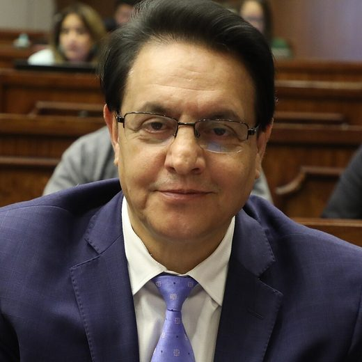
Journalist, assembly member, presidential candidate. Assassinated on August 9, 2023.
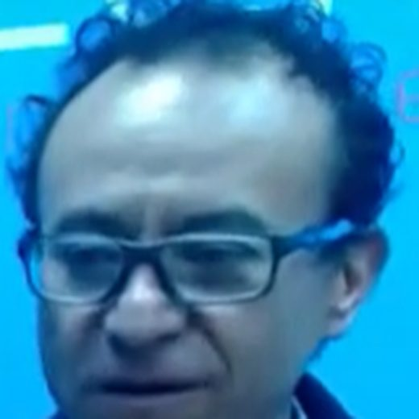
Colleague and partner in Periodismo de Investigación. He made the copy and took it to the FBI.
Lawyer and political operator, cousin of Pareja Yannuzzelli, friend of Lasso. He paid the guys every month.
Attorney general. The chats show coordination on cases; she denies them.
Daughters. They filed a privacy violation complaint against six people.
Correísta candidate who posted the link to the files.
In charge of pacifying the prisons under Lasso; prosecuted as part of Norero's network.
Los Lobos ringleader and the only witness to the assassination.
Photos via Wikimedia Commons. Fernando Villavicencio: Asamblea Nacional del Ecuador (CC BY-SA 2.0); Christian Zurita: Radio Digital Centro Ecuador (CC BY-SA 4.0); Diana Salazar: Cesargoza (CC BY-SA 4.0).
It issued a statement on November 6 calling the information false. In writing to La Posta on the 7th, it admitted that the phone is in FBI custody and that the copy it received is part of the preliminary investigation into the murder. On the attorney general: she did not disseminate restricted information, did not threaten anyone, and cannot open an investigation against herself. It later clarified that she was not part of the daughters' complaint.
They denied the authenticity of their conversations. Pareja Cordero, in five points: León Roldós is honorable, he made no payment, he was never threatened by Salazar, he did not arrange any jobs, and his phone is full of threats.
She called the publication an affront to her father's memory, asked how much the chats had been manipulated and accused Boscán of sharing information with Norero and Massú. She confirmed the phone's chain of custody. With her sister Tamia she filed a privacy violation complaint.
He asked that Villavicencio's corruption investigations be published too.
He said that during the Lasso government nobody was favored immorally or illegally and that he did not remember those conversations.
It makes no sense for me to seek funding for him or for anyone; I never asked him to talk about anything.
She never received dirty money; she donated most of her services and declared them with an invoice to the CNE. She called it an outrage.
I have no idea what you're talking about. The ones who kept quiet about Norero were them.
She confirmed that Jairala's deposits were made into her account and that she returned the money.
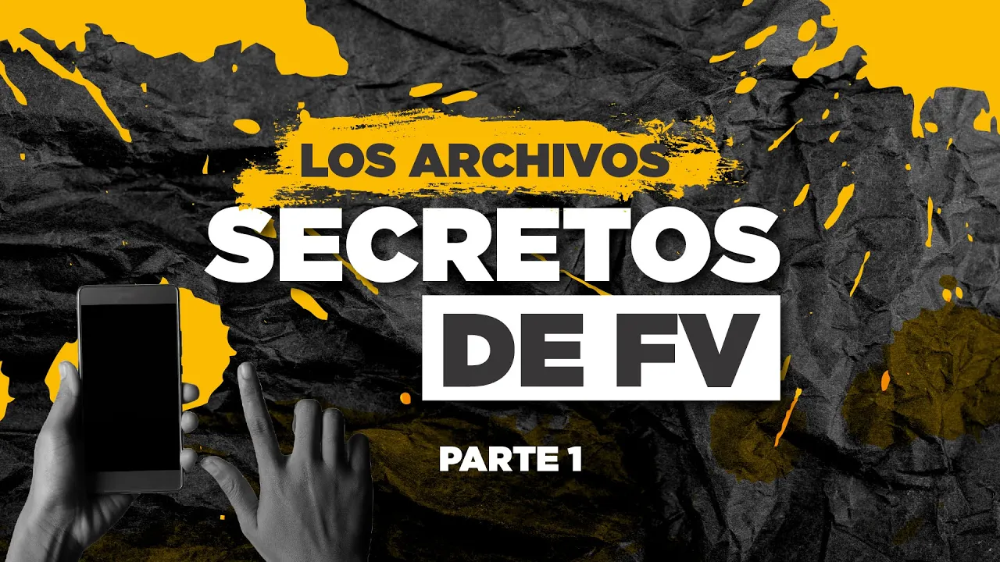
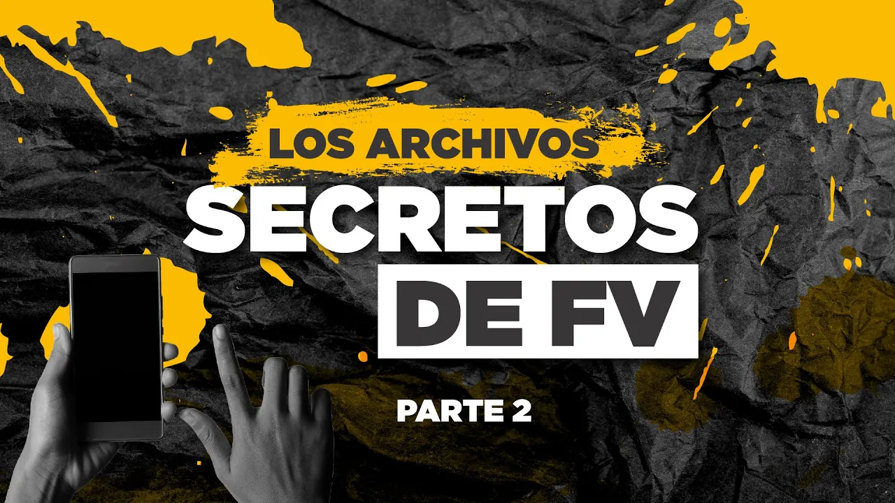
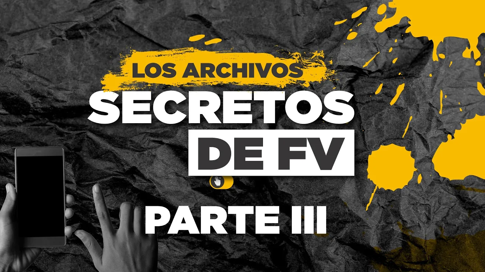
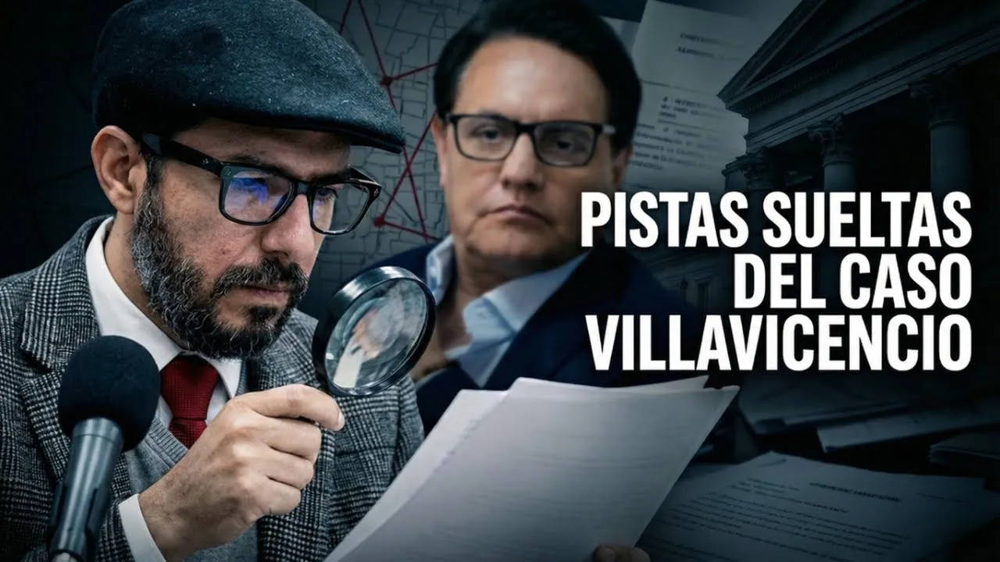
reason we are here to raise awareness of what is happening in these first kilometers along the Tomebamba River The amount of water in the river one of the mightiest in the city of Cuenca is minimal Now more than ever let's save water welcome everyone to café la posta thursday november 7 9:27 in the morning we welcome you all today we have a special show the secret fi…
Read the full transcriptdisunity Because this is the only thing that unites us without reservations the noble Cuenca that eternal and everlasting city that we love deeply whose sky is painted red and yellow today and evokes hope to be the pride of the country and of Latin America welcome everyone to café la posta friday november 8 99:24 in the morning we are here on our second day of the release of the secret files of Fernando villavicencio …
Read the full transcriptposta to now begin with what brings us together today the third part of the chats of Fernando villavicencio the secret files of let's go the the phone was put immediately everyone focuses on Finding his phone because they want to know the information it Had there there is purely personal information of Fernando because we would like to expose this information sooner or later leaks destroyin…
Read the full transcriptit is tuesday november 12 88:53 in the morning Thanks to everyone who is here with us since the fourth day the fourth release of the secret files of Fernando villavicencio today we are going to talk about a few little things above all with payments to judges the latest threats that reached Fernando villavicencio before his assassination and other topics that we will go deeper into throughout the show today we are also going to have…
Read the full transcriptVillavicencio, because there is a super-duper important update, super-duper important. We will see it right away. Before starting it's because I have sent now production is here here is the the letter that I found last night in in Mia Valentina's own handwriting. The best day of my life in her crooked handwriting you have to see that she surely got her father's handwriting. My youngest daughter has her mother's handwriting. Handwriting like a draw…
Read the full transcriptTranscripts from each show's automatic captions. They have not been corrected by hand: use them to find a phrase and jump to the exact minute in the video, not as verbatim quotes.
None for forgery. None resolved.
Still delayed. The chats provided no evidence about the crime, but they did offer signals about Los Lobos.
The Energy Minister's recordings
2024The cartel's legal businesses and the Attorney General's Office that did nothing
2021The generals who shut down León de Troya and the commander the drug traffickers called the godmother
The chats quoted are the ones La Posta showed on screen and verified with the people in them. Those who denied their authenticity are listed in this case file. The videos are the original shows, hosted on this site. Chapter 4 summarizes conversations from the copy La Posta received in November 2024; they were not broadcast and are presented as dated claims by their authors.